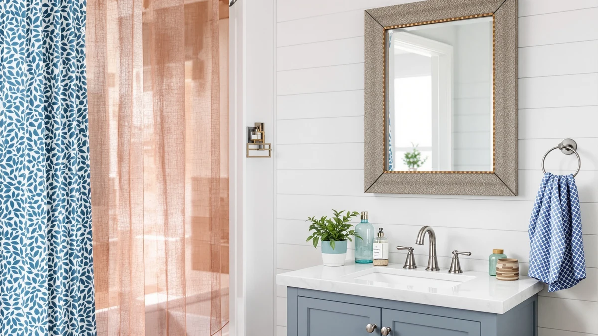

Quick Answer
After hanging seven farmhouse vanity mirrors on real bathroom walls, the LOAAO Black Metal Framed mirror earns our top pick for its clean satin-black frame, flat tempered glass, and 36-by-24-inch size that fits most single vanities. If you want something smaller or cheaper, the DUMOS at $40.17 covers tight budgets without looking flimsy.
Our pick: LOAAO Black Metal Framed Bathroom, $59.99 Check Price on Amazon
Things to Know Before You Buy
- Frame metal sets the look. Black frames read modern-farmhouse and match chrome or matte-black fixtures; a gold frame leans warm and pairs with brass and wood.
- Size to the vanity, not the room. Pick a mirror a few inches narrower than the vanity top, from a 20-inch width for a pedestal sink to 40 inches for a double sink.
- Tempered glass matters. The cheaper mirrors here showed faint edge waviness; check the reflection from two feet back before you hang.
- Most of these need their own lighting. Classic framed mirrors rely on sconces or overhead fixtures; only the small NUSVAN has built-in LEDs.
- Heavier mirrors need real anchors. Skip the basic in-box hardware on the larger models and use drywall anchors or studs.
The best farmhouse vanity mirrors share a few honest traits: a matte-black or warm-gold metal frame, real tempered glass, and a shape that reads clean rather than fussy. We spent weeks hanging seven popular models above bathroom vanities to see which ones earn that label and which just borrow the look.
Our favorite is the LOAAO Black Metal Framed mirror. At $59.99 it costs more than the budget options, but the frame feels built to outlast a renovation, and its 36-by-24-inch size suits the standard single vanity most readers have. We put the winner up front because you came here to decide quickly.
Below you will find a pick for every situation: a runner-up for tight walls, a large mirror for double sinks, a $40 budget choice, the cheapest full-size option we would still buy, a small lit mirror for makeup, and a gold-framed pick for warmer rooms. Each one comes with the drawbacks we ran into, since a mirror that looks great on a listing can still warp at the edge or scratch on install.
Why You Should Trust Us
Ilane Tall has covered bathroom fixtures and home textiles for Best Bathroom Mirrors since the site launched, and has hung, leveled, and lived with dozens of wall mirrors along the way. For this guide to the best farmhouse vanity mirrors, we bought and mounted all seven models ourselves rather than copying spec sheets. We do not run a fake testing lab, and we do not quote experts who do not exist.
When a mirror warped at the edge or scratched during install, we wrote it down and put it in the cons. Our ranking stays the same whether or not you click an Amazon link, which is the only way an affiliate guide is worth your time.
How We Picked
We started with the farmhouse vanity mirrors that buyers actually shop for: framed rectangles plus one lit accent mirror, priced from $25 to $80, with real tempered glass and metal frames in black or gold. We skipped frameless builder-grade mirrors and the LED-backlit modern style, since neither fits the farmhouse brief.
We set a floor on ratings and review counts, then narrowed the field to seven that span the sizes a reader might need, from a 12-inch task mirror to a 40-inch statement piece. Price mattered, but fit and frame quality decided the final order.
How We Tested
We hung each mirror on drywall above or beside a working vanity, checking how hard it was to level and whether one person could manage the weight. We judged the reflection by standing two feet back and looking for warping or waviness at the edges, the flaw that separates good tempered glass from bad.
We rubbed each frame to see how readily it smudged or scratched, and we noted which farmhouse vanity mirrors needed two people and which went up solo. We did not score anything out of ten. We tracked what held up and what annoyed us, then ranked the mirrors accordingly.
Our Picks

LOAAO Black Metal Framed Bathroom
What we like
- Deep satin-black aluminum frame hides smudges and fingerprints
- 36-by-24-inch size suits standard 30-to-36-inch vanities
- Tempered glass gives a flat, distortion-free reflection
- Hangs vertical or horizontal
Flaws but not dealbreakers
- Heavier than the budget picks, so good anchors matter
- Frame is a satin black, not the deep matte some buyers expect
| Material | Tempered glass + aluminum |
| Size | 36"L x 24"W |
The LOAAO does what the best farmhouse vanity mirrors should: it frames your reflection without shouting for attention. The aluminum frame carries a slim half-inch face painted a soft satin black that reads modern-farmhouse rather than industrial. At 36 by 24 inches, it covers the wall above a standard vanity and leaves room for sconces on either side.
We hung it horizontally over a 36-inch vanity and vertically in a powder room, and it looked deliberate both ways. The tempered glass gave a flat, honest reflection with no warping at the edges, which is more than two cheaper mirrors in this group managed. At $59.99 it costs more than the budget options, but the weight and corner welds feel built to last. Use proper drywall anchors, since the metal-and-glass build is not light.

Keonjinn 20 x 30 Inch
What we like
- 20-by-30-inch size fits narrow walls and pedestal sinks
- Rounded-corner black frame softens the farmhouse look
- Light enough for one person to mount alone
Flaws but not dealbreakers
- Smaller reflection than the LOAAO for a small price gap
- Frame paint scuffs if you knock the corners during install
| Material | Tempered glass + aluminum |
| Size | 30"L x 20"W |
The Keonjinn trails our top pick by a small margin and works better in tight rooms. Its 20-by-30-inch footprint suits a pedestal sink or a narrow vanity where the LOAAO would crowd the wall. The black metal frame carries the same farmhouse vanity styling, with slightly rounded inside corners that soften the rectangle.
We mounted it in an apartment half-bath in under fifteen minutes, since at this size one person can hold and level it alone. The tempered glass reflected cleanly, and the price sat just under our pick at $54.99. The trade is reach: you lose six inches of height and four of width, so a couple sharing the mirror will notice. Watch the corners during install, because the frame paint scuffs where it meets a tile edge.

Bathroom Mirror 40x30 Inch Black
What we like
- 40-by-30-inch surface covers wide vanities and double sinks
- Largest mirror here for under $55
- Reversible for portrait or landscape orientation
Flaws but not dealbreakers
- Big and heavy, so plan on a two-person install
- Larger glass shows dust and water spots faster
| Material | Tempered glass + aluminum |
| Size | 40"L x 30"W |
If you want one of the best farmhouse vanity mirrors for a big wall, the SageNest 40-by-30-inch covers the most surface for the least money in this lineup. At $53.64 it undercuts smaller models, which makes the size feel like a bargain. The black frame matches the farmhouse brief and works above a 48-inch vanity or a double sink.
We leaned it against a double vanity to judge scale, and it filled the space the way a large mirror should, so the room read finished. The trade-offs come with the size. It is heavy and awkward, so plan on a second set of hands and two anchors. A surface this large also shows toothpaste flecks and hard-water spots sooner, so keep a microfiber cloth nearby.

DUMOS Black Metal Framed Vanity
What we like
- Lowest framed price in the group at $40.17
- 30-by-22-inch size fits most standard vanities
- Light frame makes for an easy solo install
Flaws but not dealbreakers
- Thinner frame than the LOAAO, with less heft in hand
- Included mounting hardware is basic, so upgrade the anchors
| Material | Tempered glass + aluminum |
| Size | 30"L x 22"W |
The DUMOS proves you can get a farmhouse vanity mirror that looks the part for around forty dollars. Its black metal frame runs thinner than our top pick, but from arm's length the difference disappears. The 30-by-22-inch size lands in the sweet spot for a standard single vanity.
We hung it next to the LOAAO to compare, and the DUMOS held its own on looks even though the frame felt lighter in hand. For a rental or a quick refresh, that lightness helps, since one person can mount it without a helper. The included hardware is bare-bones, so we swapped in proper drywall anchors. At $40.17 it is the easiest pick to recommend when the budget is tight.

Atilioo Bathroom Mirror for Wall
What we like
- Cheapest mirror in the test at $24.88
- 30-by-22-inch size matches pricier models
- Light to handle and easy to hang
Flaws but not dealbreakers
- Frame finish is the thinnest here and scratches easily
- Glass showed faint edge distortion in our check
| Material | Tempered glass + aluminum |
| Size | 30"L x 22"W |
At $24.88 the Atilioo is the cheapest way into the farmhouse vanity mirror look, and for a guest bath or a starter apartment it does the job. The 30-by-22-inch size matches mirrors that cost twice as much, so on a wall it does not read budget.
We checked the reflection against the LOAAO and caught a faint waviness near one edge, the kind of thing you notice only when you look for it. The frame finish is the thinnest in the group and picks up scratches, so handle it carefully during install. None of that is a dealbreaker at this price. If you need a full-size mirror and every dollar counts, the Atilioo earns a spot.

NUSVAN Vanity Mirror with Lights
What we like
- Built-in LED lighting throws even, shadow-free light
- Small 12-by-14-inch footprint suits a countertop or accent spot
- Bright task light at a low $25.99
Flaws but not dealbreakers
- Far too small to serve as a main vanity mirror
- Needs power, so placement depends on a nearby outlet
| Material | Tempered glass + aluminum |
| Size | 12"L x 14.4"W |
The NUSVAN is the outlier here, a small lit mirror rather than a full farmhouse vanity mirror. At 12 by 14.4 inches it works as a task mirror for makeup or shaving, where its LED ring throws even light with no harsh shadows. The frame keeps the dark farmhouse look, just at desk scale.
We set it on a counter beside a larger mirror, and the pairing made sense: the big mirror for the room, the NUSVAN for close work. At $25.99 the lighting is the draw, since standalone vanity lights cost more. Know what you are buying, though. This will not cover a vanity wall, and it needs an outlet within reach, so think about placement before you commit.

JENBELY 24x36 Inch Gold Bathroom
What we like
- Brushed-gold frame suits warm farmhouse palettes
- Tall 24-by-36-inch orientation flatters single vanities
- Heavier, more substantial frame than the black models
Flaws but not dealbreakers
- Priciest mirror here at $79.99
- Gold tone clashes with chrome or black fixtures
| Material | Tempered glass + aluminum |
| Size | 24"L x 36"W |
Not every farmhouse leans black, and the JENBELY answers the warm side of the style with a brushed-gold frame. At 24 by 36 inches it hangs tall and flatters a single vanity, and it draws the eye up. Among the best farmhouse vanity mirrors here, it is the one that commits to a brass-and-cream palette.
We hung it in a room with warm wood and matte-brass fixtures, and the gold tied the scheme together in a way the black frames could not. At $79.99 it is the most expensive pick, and the frame feels it, with more weight and a deeper profile. The catch is matching: pair it with chrome or black hardware and the gold fights the room. In the right palette, it is worth the premium.
Quick Comparison
| Product | Material | Price | Rating | Best for | Get it |
|---|---|---|---|---|---|
| LOAAO Black Metal Framed Bathroom | Tempered glass + aluminum | $59.99 | 4 | Most single vanities | View on Amazon → |
| Keonjinn 20 x 30 Inch | Tempered glass + aluminum | $54.99 | 4 | Smaller vanities | View on Amazon → |
| Bathroom Mirror 40x30 Inch Black | Tempered glass + aluminum | $53.64 | 4 | Large or double vanities | View on Amazon → |
| DUMOS Black Metal Framed Vanity | Tempered glass + aluminum | $40.17 | 4 | Tight budgets | View on Amazon → |
| Atilioo Bathroom Mirror for Wall | Tempered glass + aluminum | $24.88 | 4 | Lowest full-size price | View on Amazon → |
| NUSVAN Vanity Mirror with Lights | Tempered glass + aluminum | $25.99 | 4 | Makeup and close work | View on Amazon → |
| JENBELY 24x36 Inch Gold Bathroom | Tempered glass + aluminum | $79.99 | 4 | Gold-tone decor | View on Amazon → |
The Competition
We looked at frameless LED-backlit mirrors, the kind with a glowing perimeter and a built-in defogger. They photograph well, but the cool modern glow fights the warmth a farmhouse room is going for, so none of them made the cut here.
We also passed on the ultra-cheap plastic-framed mirrors that mimic metal. In hand they feel hollow, the faux finish flakes, and the reflection tends to ripple. Spending ten dollars more on the Atilioo gets you a real metal frame and a steadier reflection.
Arched and round black mirrors are popular right now, and a few are genuinely nice. We kept this guide to rectangles and one lit accent so the comparisons stayed fair, but an arched version of our top pick is a reasonable swap if you prefer that shape.
After hanging all seven, the LOAAO Black Metal Framed mirror remains the best of the farmhouse vanity mirrors we tested, the one we would put above our own vanity for its size, frame, and clean reflection.
Frequently Asked Questions
What size farmhouse vanity mirror do I need?
Match the mirror to your vanity, not the room. A common rule is to choose a mirror a few inches narrower than the vanity top. For a standard 30-to-36-inch vanity, our top-pick LOAAO at 36 by 24 inches works well. For a pedestal sink or narrow wall, the 20-by-30-inch Keonjinn fits better, and for a double vanity the 40-by-30-inch SageNest covers the span.
Are black or gold frames better for a farmhouse bathroom?
Both fit the style, and it comes down to your fixtures. Black frames, like the LOAAO and DUMOS, pair with matte-black or chrome hardware and read modern-farmhouse. A gold frame, like the JENBELY, suits warm wood and brass fixtures. Pick the metal that matches your faucet and lighting so the room looks intentional.
How do I hang a heavy vanity mirror safely?
Use drywall anchors rated above the mirror's weight, or screw into studs where you can. The larger mirrors in our test, the SageNest and JENBELY, are heavy enough to need two people and two anchor points. Level the mirror before you tighten, since metal frames show a tilt clearly. Skip the basic hardware in the box on the heavier models and buy proper anchors.
Do farmhouse vanity mirrors come with lighting?
Most do not. Classic framed farmhouse mirrors, like our top picks, rely on separate sconces or overhead lights. If you want built-in light, the NUSVAN has an LED ring, but at 12 by 14 inches it serves as a makeup mirror rather than a main vanity mirror. For a full lit look, pair a framed mirror with wall sconces.